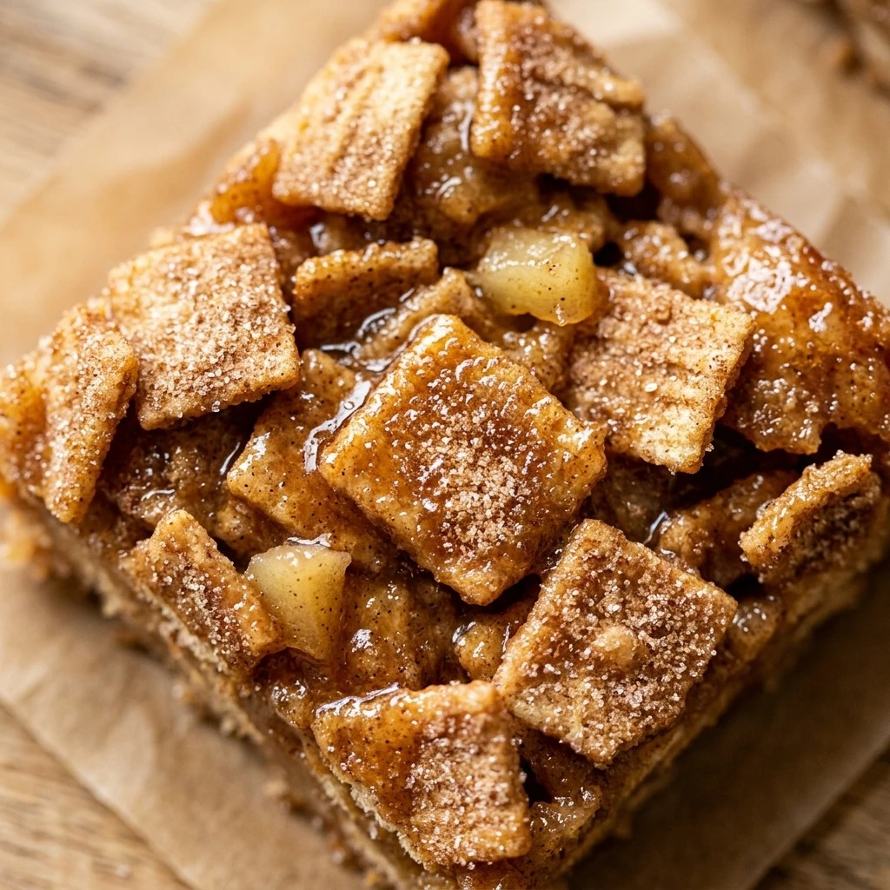

Apple Cider Cinnamon Toast Crunch Bars Recipe
October 17, 2026

Fall is the perfect time to enjoy the cozy flavors of cinnamon and apple. These Apple Cider Cinnamon Toast Crunch Bars take a classic marshmallow treat and give it a seasonal upgrade. By infusing the chewy marshmallow base with concentrated apple cider, you get a snack that tastes exactly like an apple cider donut but with a satisfying crunch.
Recipe Information
Prep Time: 10 minutes
Cook Time: 10 minutes
Total Time: 20 minutes
Servings: 12 bars
Difficulty Level: Easy
Nutrition Information
Calories per serving: 185 kcal
Protein: 1.5g
Carbohydrates: 34g
Fat: 6g
Fiber: 1g
Sugar: 19g
Sodium: 190mg